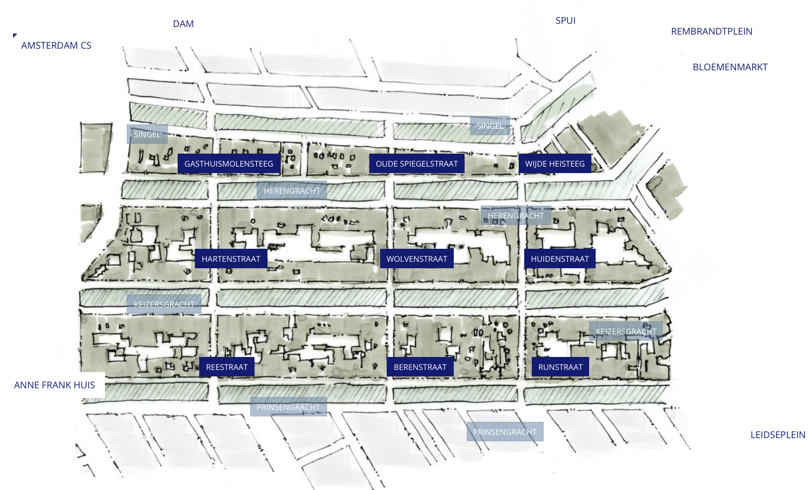

CHALLENGE ACCEPTED
~ every accomplishment starts with a decision to try ~
Visit 'De 9 Straatjes' (The Nine Streets)
To get a picture of what Amsterdam is really like, you must visit De Negen Straatjes. This micro-neighbourhood is full of little vintage stores, fun food shops, cute boutiques, and cosy cafés. Plan route to The Nine Streets Nearest metrostation: Rokin